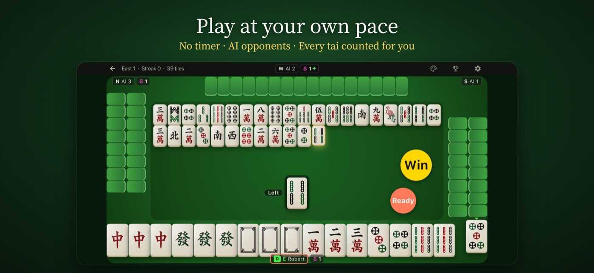
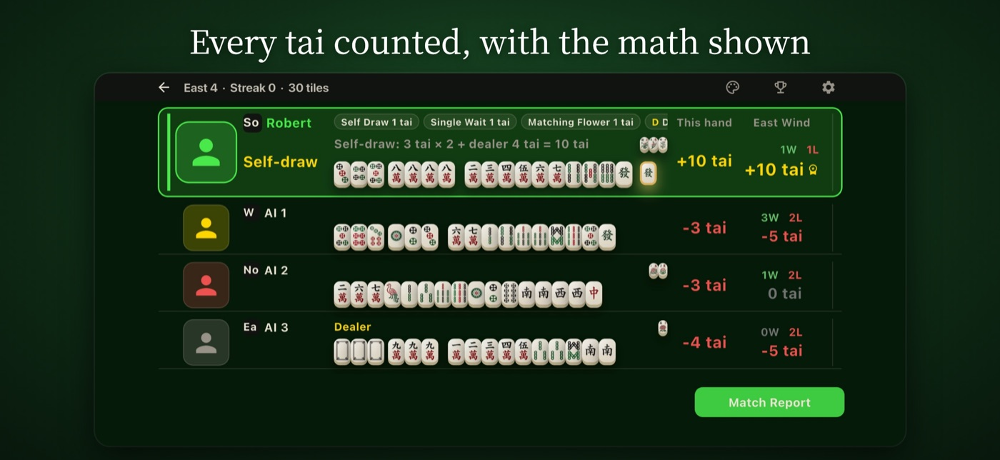
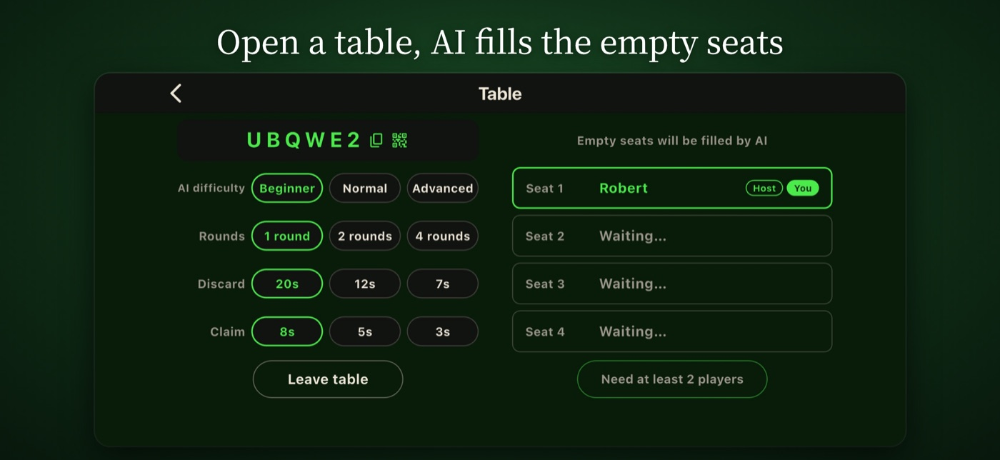
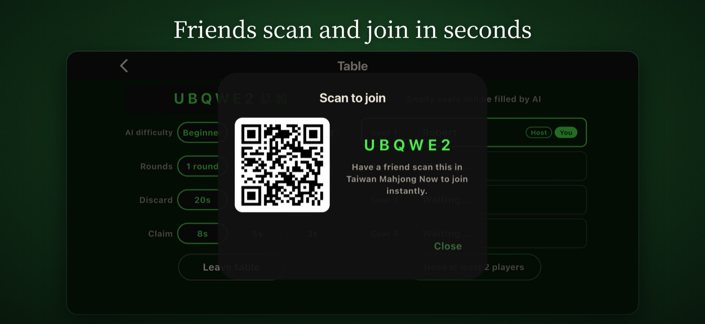

台湾麻雀ガイド
台湾麻雀（16枚）入門｜日本の麻雀との違いと Taiwan Mahjong Now
台湾麻雀は、手牌16枚で五面子一雀頭を目指す4人麻雀です。チーやポンなど日本の麻雀と共通する部分も多い一方、花牌や「台（タイ）」で数える点数など、異なるルールもあります。
このページは日本語ですが、アプリの表示言語は英語・繁体字中国語です。日本語UIには対応していません。
違い
台湾麻雀と日本のリーチ麻雀は何が違う？
| 項目 | 台湾麻雀 | 日本のリーチ麻雀 |
|---|---|---|
| 通常の手牌 | 16枚 | 13枚 |
| 基本の和了形 | 五面子一雀頭（17枚） | 四面子一雀頭（14枚） |
| 花牌 | 8枚を使うことが多い。引いたら公開して補充する | 通常は使わない |
| リーチ・ドラ | 日本式のリーチとドラはない | ある |
| 点数 | 「台」で数える。細かい決まりは卓によって異なる | 符と翻で計算する |
一般的な比較です。地域や卓、アプリによってルールは異なります。カンをすると枚数は増えます。
流れ
まずは一局の流れをつかもう
- 配牌：各自16枚を持って始めます。花牌があれば公開して補充します。最初に親が1枚引いて17枚にし、1枚捨てます。
- ツモと打牌：自分の番に1枚引いて、1枚捨てます。花牌を引いたら公開して補充します。花牌は面子には使いません。
- 鳴き：チー、ポン、カンができます。チーは基本的に上家の捨て牌からです。
- 和了：五面子一雀頭を目指します。ツモでも、他家の捨て牌でも和了できます。
- 点数：和了の形や条件に応じて台を数えます。最初は台を覚えるより、形と流れに慣れるのがおすすめです。
アプリのルール
Taiwan Mahjong Nowのルールで注意したい点
台湾麻雀のルールは卓によって異なります。以下は、このアプリでのルールです。
- フリテン：和了できる牌を見逃しても、その後に和了できます。ただし、天聴・地聴は通常の聴牌宣言の1台に戻ります。
- 聴牌の宣言：宣言すると1台つきます。宣言後は手牌を変更できず、ツモと打牌は自動になります。全員に表示されますが、日本のリーチとは別のルールです。
- 同時に和了を宣言した場合：和了できるのは1人だけです。牌を捨てた人の下家から近い順に優先されます。
- 連荘：親が続くと、台が増えていきます。
練習
Taiwan Mahjong Nowで練習する
Taiwan Mahjong Nowは、台湾麻雀を遊べるiOSアプリです。アカウントは必要ありません。一人でAIと対局でき、ネットワークがなくても遊べます。一人用の対局は、途中でやめても続きから再開できます。
友だちとは、卓コードまたはQRコードで同じ卓に座れます。この場合はネットワークが必要です。知らない人と自動でマッチングすることはありません。
画面の例です。実際の表示は英語または繁体字中国語になります。下の画像は英語表示です。



アプリの表示言語は英語・繁体字中国語です。日本語UIには対応していません。アプリ内のルール説明も英語または繁体字中国語です。
FAQ
よくある質問
台湾麻雀は何枚で遊びますか？
通常の手牌は16枚です。基本の和了形は五面子一雀頭で、合計17枚です。
日本のリーチ麻雀を知っていれば遊べますか？
ツモ、打牌、チー、ポンなどの考え方は共通しています。手牌の枚数、花牌、点数の数え方は新しく覚える必要があります。
花牌を引いたらどうしますか？
公開して、代わりの牌を1枚引きます。細かい決まりは卓によって異なります。
一人でも練習できますか？
はい。Taiwan Mahjong Nowでは、ネットワークがなくても一人でAIと対局できます。友だちとの対局にはネットワークが必要です。
Taiwan Mahjong Nowは日本語に対応していますか？
いいえ。日本語なのはこのページだけで、アプリの表示言語は英語・繁体字中国語です。App Storeのページも日本語ではない場合があります。
知らない人との自動マッチングはありますか？
いいえ。友だちと卓コードまたはQRコードで同じ卓に座る方式です。
広告やアプリ内課金はありますか？
広告はあります。対局の途中を遮らないよう、全画面広告は各場の最後の親の局が始まる前にのみ表示されます。また、各局の結果画面には小さなバナー広告が表示されます。アプリ内課金とサブスクリプションは、2026年11月時点ではありません。
このページについて
このページは、Taiwan Mahjong Nowの開発者（MyOpen Studio）が作成しています。自社アプリの紹介を含みます。
最終更新：2026年11月9日